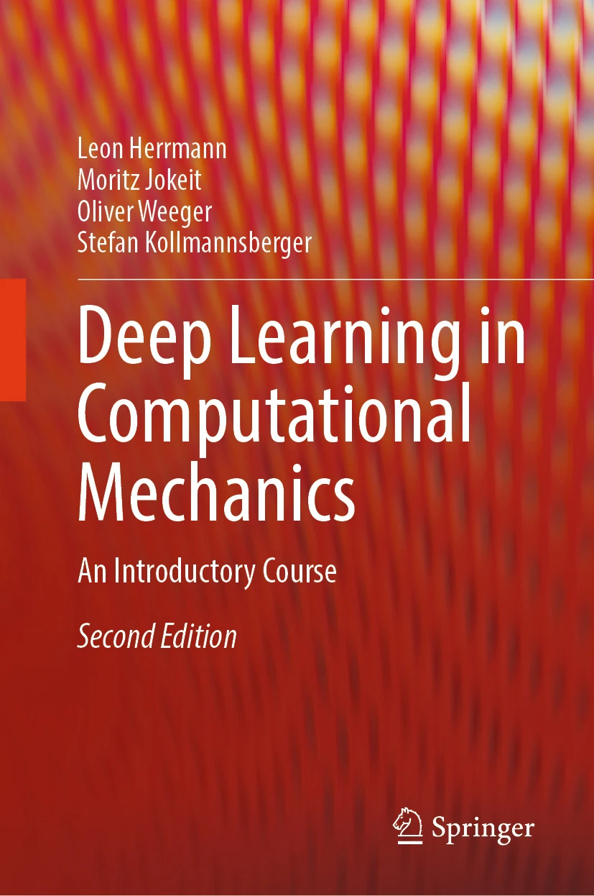

cuwave
Single-GPU differentiable higher-order finite difference wave propagation code.
We are the computational mechanics group at the Chair of Data Science in Civil Engineering, Bauhaus-Universität Weimar, led by Stefan Kollmannsberger. We build numerical methods — and the code that runs them — for simulating and designing engineering structures.
Single-GPU differentiable higher-order finite difference wave propagation code.
Efficient multi-level hp- and other finite element methods in arbitrary dimensions.

Exercises and reference implementations accompanying our introductory course and textbook on deep learning for mechanics.
A full list is maintained on the chair's publication page.